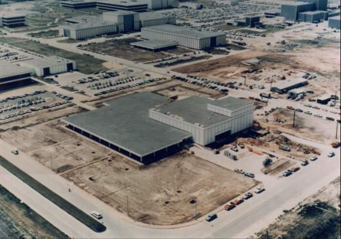
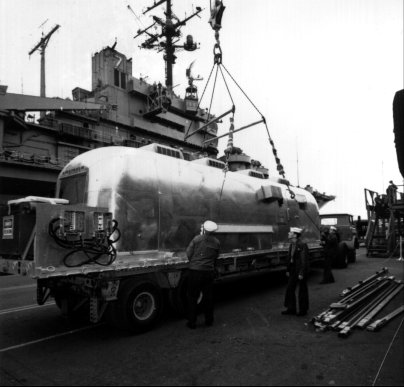

Mission planning and crew training were only two of the many activities that had to be carried out for Apollo 11. NASA and contractor employees worked out procedures and prepared facilities for handling and studying lunar samples, drafted recovery plans for both the crew and the moon materials to calm fears of back contamination, and tested the lunar module. And review piled on review as preparations for Apollo 11 came into the home stretch.
John E. Pickering, NASA's Director of Lunar Receiving Operations, reminded Hess in September 1968 that there were only 300 days in which to get ready for the mission - and weekends and briefings would chew up more than a third of that time. Pickering outlined a schedule of month-by-month activities that would have to be carried out if the receiving laboratory was to meet the deadline. Gilruth set up an operational readiness inspection team* in October, headed by John Hodge, to check out the laboratory. In January 1969, Phillips added this Houston facility to the other items that would be reviewed by the certification board. He named five major aspects for study: landing and recovery procedures, laboratory operations, astronauts and samples release plans, sample processing and distributing plans, and scientific investigations. Gilruth set the review for 3 February, with an agenda that included briefings on all activities from the time the astronauts landed on the lunar surface until scientific results were reported.46

Lunar Receiving Laboratory at the Manned Spacecraft Center, Houston.
The Lunar Receiving Laboratory covered 25,300 square meters. Public interest focused on the crew reception area, which served primarily as a quarantine facility for astronauts and spacecraft, with their attending physicians, technicians, housekeepers, and cooks. Scientists were more concerned with the sample operations section, where the lunar materials were analyzed, documented, repackaged, and stored within a biological barrier. The third, and final, area contained support and administrative personnel, laboratories, offices, and conference rooms. Employees who worked here, outside the barrier, were free to come and go - unless they accidentally came into contact with the lunar materials or the astronauts. In February these teams went through a six-week rehearsal of the events that would take place from the arrival of the moon rocks to the end of the quarantine period. It was obvious that the laboratory teams were not ready. Gilruth sent Richard Johnston to take charge and to start a crash program to get the laboratory moving. Johnston ran practice tests of all laboratory procedures, insisting on participation by principal investigators assigned to the experiments, until he was satisfied that everything was in order.47
Gilruth had asked Johnston in January 1969 to find out what the Houston senior staff thought was needed to prevent back contamination. To help this group in making judgments, Johnston set up briefings by specialists on landing and recovery, flight crew support, laboratory preparations and operations, and agenda summaries of coming meetings of the Interagency Committee on Back Contamination. In the meantime, Paine had turned over back contamination responsibilities to Mueller, who began discussions with representatives from the Departments of Agriculture and the Interior and the U.S. Public Health Service. These scientists visited the laboratory in mid-February and asked for tighter controls on even the most minute operations. In May, Gilruth established an Apollo Back Contamination Control Panel,** similar to the spacecraft configuration control boards, to conduct very strict reviews of any changes in either facilities or procedures.48

Mobile Quarantine Facility off-loaded from carrier Randolph during recovery rehearsal simulation before the Apollo 11 mission.
A successful quarantine would depend on carefully worked out spacecraft, lunar sample, and crew recovery procedures. In November 1968, Washington asked Kraft's recovery operations people to conduct "an end-to-end dress rehearsal simulation." This test began in January when the Mobile Quarantine Facility, resembling a streamlined automobile house trailer without wheels and capable of supporting six persons for ten days, was passed between two ships near Norfolk, Virginia. About the time of the Apollo 9 recovery, four test subjects made a trial run in the quarantine facility from the Pacific to Houston.49
There were a few hitches in working out the recovery plan. Any contamination that the command module might pick up from the lunar module should be neutralized by the searing heat of earth reentry before the vehicle splashed into the Pacific. The planners intended to lift the command ship aboard the prime recovery vessel and park it next to the quarantine trailer, so the crew could move quickly into isolated quarters. This idea had to be abandoned because the attachment loop on the space vehicle was not strong enough - it could have pulled loose and dumped the craft, crew and all, into the sea. Crew system specialists then came up with what they called a biological isolation garment - BIG in the technicians' usual shorthand. The crew would climb from the spacecraft into a raft, put on the garments (which really made them look like creatures from outer space), ride a helicopter to the ship, deplane, and enter the trailer. Kerwin and Collins tested the garments in a tank and discovered that the face mask filled with water when the inhalation valve was submerged. If rough seas dumped the crew from the raft, the biological barrier would be broken when they pulled off the masks to keep from drowning. But this problem was corrected, procedures were impressed on the crew of the carrier Hornet, details were cleared with the Interagency Committee on Back Contamination, and a notice was published in the Federal Register. On 26 June, Kraft notified everyone concerned that procedures for recovery and quarantine were ready.50
The lunar module probably had to undergo the toughest tests and the sharpest scrutiny of all the hardware, procedures, and facilities. LM-2, veteran of the Saturn launch vehicle pogo testing program, was called upon to simulate landing stresses. Robert J. Wren, from Faget's directorate, and a team from Houston and Grumman rigged the vehicle in Houston's vibration and acoustic testing facility. Dropping LM-2 at slightly different angles to see how it would stand the shock of landing was a simple test. But the ascent stage carried a full propellant load and the descent tanks a small quantity of fluid; when the tanks were pressurized, this could be dangerous. Maximum safety precautions were taken, however, and the tests were completed successfully.51
Although the lander passed all its trials with good marks, Low still worried about single-point failures that could wreck a mission. He sent a "walk-down team" to the contractors' plants to inspect both spacecraft and told Rocco Petrone that he would like the same kind of inspection at the Cape by veterans in spacecraft flight preparations. Low even wanted someone to take a look at the landing gear to make sure the honeycomb shock absorbers had been installed.52
Most of the flight readiness reviews for Apollo 11 - mission content, lunar module, command and service modules, government-furnished equipment (the extravehicular pressure garments and backpack, experiments and equipment, and cameras), back contamination, and medical status - were held from middle to late June. Carroll Bolender, Houston manager of LM-5, found that the general quality had consistently improved, but the vehicle had more items for resolution on 23 June than LM-4 had at a comparable time. Martin Raines' flight safety team attended the reviews, keeping a close watch on the hardware, and admitted that the only great risk it could see was that Apollo 11 was to make the first lunar landing - and that risk would be there no matter what vehicle made the trip. The Boeing Company also reviewed the mission and came to the same conclusion. The missions were coming so close together now that Mueller began to worry about possible fatigue overtaking the workers. When he wrote Gilruth of his concern, however, the gist of his message was "worry [along with me] but don't allow [it] to interfere with driving your staff at full throttle until . . . the Lunar Landing." And they did drive on. On 14 July, Director Phillips confirmed that Apollo 11 was ready for flight.53
* Hodge's team consisted of Peter J. Armitage, Aleck C. Bond, John W. Conlon, D. Owen Goons, Joseph Kerwin, Paul H. Vavra, and Earle B. Young (MSC); E. Barton Geer (Langley); A. G. Wedum (Fort Detrick); and Donald U. Wise (NASA Headquarters).
** The panel consisted of Johnston (chairman), Walter W. Kemmerer, Jr., Persa R. Bell, R. Bryan Erb, Bennie C. Wooley, John C. Stonesifer, James H. Chappee, and Herbert L. Tash (secretary).
46. Col. John E. Pickering to Hess, 16 Sept. 1968, with enc.; Gilruth memo, "Operational Readiness Inspection of the Lunar Receiving Laboratory," 21 Oct. 1968; Phillips to MSC, Attn.: Gilruth, "Lunar Receiving Laboratory Readiness Review," 16 Jan. 1969; Gilruth to Phillips, 29 Jan. 1969, with enc., tentative agenda, Lunar Receiving Laboratory DCR.
47. MSC, "Lunar Receiving Lab," news release 69-9, 24 Jan. 1969; "Lunar Sample Area on Operational Status," MSC Roundup, 7 Feb. 1969; MSC, "Lunar Receiving Laboratory operations," Announcement 69-60, 1 May 1969; MSC news release 69-42, [1 May 1969]; Johnston memo, "Apollo Back Contamination Simulation Meeting Summary," 23 May 1969, with enc.; "LRL Prepares for First Moon-Data Assignment: Preliminary Examination of Lunar Rock Samples," MSC Roundup, 13 June 1969.
48. Johnston memo, "Back Contamination Program Review," 16 Jan. 1969, with encs.; Mueller to Gilruth, 13 Jan. 1969, with enc.; MSC, "Post Lunar Quarantine," news release 69-11, 24 Jan. 1969; Wolf Vishniac to Frederick Seitz, 5 March 1969; Phillips to Mgr., ASPO, "ICBC," 8 April 1969; Gilruth memo, "Establishment of Apollo Back Contamination Control Panel," 8 May 1969; minutes, [Back Contamination] Configuration Control Panel, 13 May 1969.
49. MSC, Recovery Systems Br., "Recovery Quarantine Equipment Familiarization Manual," 18 June 1969; William C. Schneider to Kraft, "'G' Mission Post-Recovery Procedures," 21 Nov. 1968; MSC. "Ten-Day MQF Test," news release 69-7, 23 Jan. 1969, and "Mobile Quarantine Facility," news release 69-10, 24 Jan. 1969; "Mobile Quarantine Trailer Gets Test During Apollo IX," MSC Roundup, 7 March 1969; Collins, Carrying the Fire, pp. 443-44.
50. Low to Phillips, 8 Feb. 1969; MSC news release 69-47, 16 May 1969; Slayton to Spec. Asst. to Dir., MSC, "Back contamination," 21 Jan. 1969 with enc., Joseph P. Kerwin and Collins to Dir., Flight Crew Ops., "Review of improved Biological Isolation Garment (BIG)," 17 Jan. 1969; OMSF Weekly Report, 23 June 1969; OMSF Report, 26 May 1969; Johnston memo, "ICBC Meeting, June 5, 1969, Atlanta, Georgia," 11 June 1969; Hage to NASA Hq., Attn.: General Counsel, "Back Contamination and Quarantine - Apollo 11," 2 July 1969; Kraft memo, "Return of Apollo 11 flight crew, command module, and lunar samples," 26 June 1969.
51. Bond to Mgr., Flight Safety Office, "Suggested procedure for safety review of LM-2 Drop Test," 30 Jan. 1969; Faget memo, "Test Readiness Review Board for LM-2 Drop Test," 14 Feb. 1969; Martin L. Raines to Asst. Dir., Chem. and Mech. Sys., "Safety evaluation of LM-2 drop tests," 5 March 1969; John M. Buxton to James J. Shannon, "Work Packages Function Number 640: Test Readiness Review (TRR) Board Meeting Minutes for LM-2 Landing Simulation, LMM 4-8, dated 13 March 1966, Submittal of," with enc., minutes. LM-2 Landing Simulation TRR Final Board Meeting, 13 March 1969; "LM-2 Drops Simulate Landing Accelerations," MSC Roundup, 21 March 1969; Low to Robert J. Wren, 16 May 1969.
52. Low to Hage, 13 May 1969, with enc., David B. Pendley to Mgr., ASPO, "LM single point failures for lunar landing mission," 8 May 1969; Low to Petrone, 8 July 1969; Raines to Mgr., ASPO, "LM-5 Landing Gear Honeycomb Review," 2 July 1969.
53. Headquarters Flight Readiness Reviews, Apollo 11: Mission, Lunar Module, Command and Service Module, Government Furnished Equipment, Back Contamination, and Medical Status, 17 June 1969; James A. York, secy., minutes of LM-5 FRRB, 23 June 1969; Raines memo, "'Apollo Spacecraft Safety Assessment CSM-107/LM-5 Mission “G” Volume I,' . . . preliminary, dated May 31, 1969," 13 June 1969, with encs.; The Boeing Co., "Flight Readiness Review Safety Assessment, Apollo 11 Mission," 9 June 1969; Mueller to Gilruth, 3 April 1969; A. Duane Catterson to Spec. Asst., MSC, "Preparation of Reply to Letter dated April 3, 1969 from Dr. Mueller to Dr. Gilruth transmitting a report of a study on human fatigue at KSC," 15 April 1969; Phillips to Apollo 11 FRRB, "Confirmation of Flight Readiness for the Apollo 11 Mission," 14 July 1969.